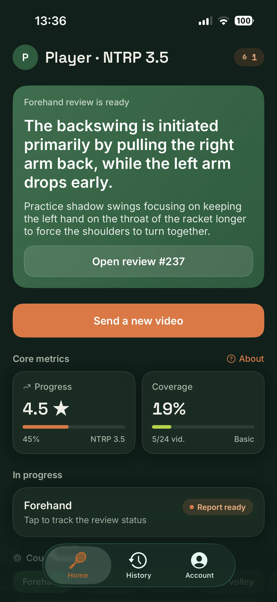
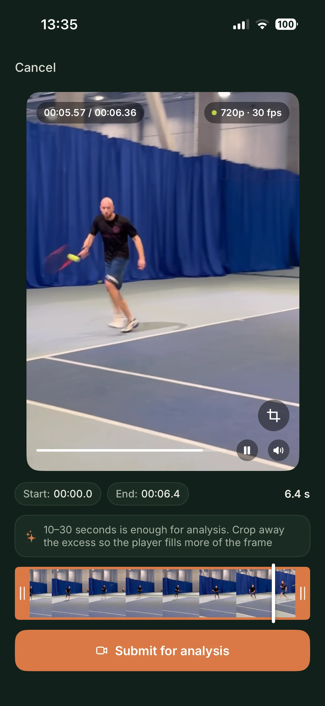
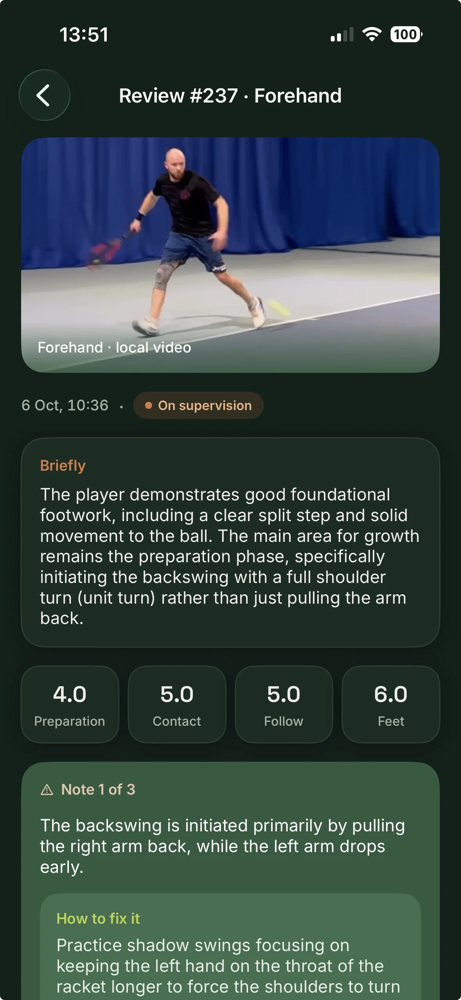

Film 10–30 seconds
One stroke. Phone to the side or behind you, around waist height. No tripod.
A short video from your phone. You get back what's wrong with the stroke and a drill for the next practice. If this stroke is already on video, we compare it with last time. A coach watches the review and adds a note of their own.
Free. Opens in Telegram.

Almost everyone has footage from practice. It usually doesn't help.
You watch your own video and it looks fine. The ball still hits the net.
A YouTube clip is about someone else's stroke. On court it doesn't come out the same.
A month of practice, and you still can't say whether you got better.
One stroke. Phone to the side or behind you, around waist height. No tripod.
What to fix and what to do at the next practice. The review arrives right away. A coach adds their own note, usually the same day.
The second review is compared with the first. You can see whether last time's fix worked.
We take a forehand, a serve or a backhand and stay with it.
A beginner and someone in their third year get different notes. We look at how long you've played, which hand you use and how often you're on court.
If we've already reviewed this stroke, we check whether the last note changed anything.
AI writes the review first. Then a coach watches the video and adds what was missing. Until they've watched, their note isn't in the review yet.
Forehand, backhand, serve, net play, footwork, rally. Each one is scored on its own.
Each mistake comes with something to do at the next practice.
Scores for each stroke, plus your NTRP level. It's clear where there isn't enough video yet.


10–30 seconds, one stroke. The review arrives right away. The coach's note follows.
Free. Opens in Telegram.